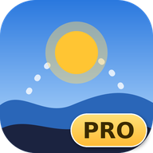

Mia Genda Pro
Para Windows y Mac
Tu agenda personal en tu ordenador: eventos, trabajos al estilo Trello, notas y avisos. Sin cuentas ni contraseñas: todo se guarda en tu ordenador y nadie más lo ve.
Windows
Windows 10 y 11 · unos 110 MB
Descargar para Windows
Mac con chip Apple
M1, M2, M3, M4 · macOS 13 o posterior · unos 115 MB
Descargar para Mac (Apple)
Mac con Intel
macOS 13 o posterior · unos 120 MB
Descargar para Mac (Intel)
- Calendario de día, semana y mes
- Tableros de trabajos con fondos
- Notas de colores con aviso
- Avisos antes de cada cita
- La carpeta de cada trabajo, a un clic
- Tus calendarios de Google, Outlook o iCloud
- Modo día y modo noche
- Copia de seguridad diaria
- Te avisa cuando hay versión nueva
Cómo instalarla
En Windows
- Abre el archivo descargado, «Instalar-Mia-Genda-Pro.exe».
- Si sale una ventana azul «Windows protegió su PC», pulsa «Más información» y luego «Ejecutar de todas formas». Sale porque el programa no lleva una firma de pago de Microsoft.
- Pulsa «Instalar». En unos segundos se abre sola y queda en el escritorio y en el menú Inicio.
En Mac
- Abre el .zip descargado: aparece «Mia Genda Pro». Arrástrala a la carpeta Aplicaciones.
- Ábrela. La primera vez el Mac avisa de que no puede comprobarla, porque no lleva la firma de pago de Apple: pulsa «Aceptar».
- Ve a Ajustes del Sistema > Privacidad y seguridad, baja hasta el final y pulsa «Abrir igualmente». Solo hay que hacerlo la primera vez.
- Si dice que la app «está dañada», abre la app Terminal, pega esta línea y pulsa Intro:
xattr -cr "/Applications/Mia Genda Pro.app"
¿Qué Mac tengo? Menú Apple > Acerca de este Mac. Si pone «Chip Apple M…», descarga la de chip Apple; si pone «Procesador Intel», la de Intel.
Actualizar a una versión nueva
- Mia Genda Pro te avisa sola cuando hay una versión nueva.
- En Windows, pulsa «Actualizar ahora»: se descarga y se instala sola, y vuelve a abrirse.
- En Mac, pulsa «Descargar la versión nueva» y arrastra la app nueva a Aplicaciones, encima de la antigua.
- Tu agenda se conserva siempre.